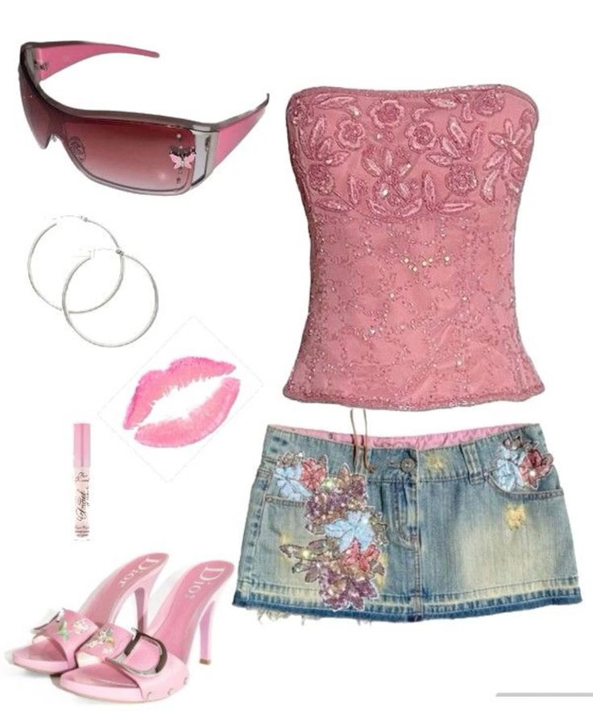
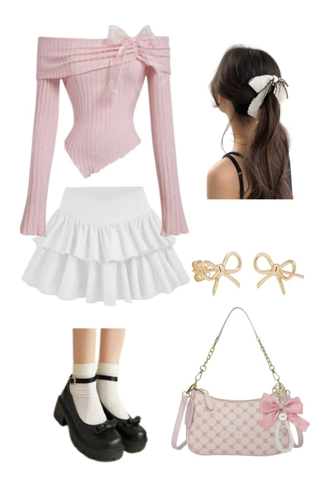
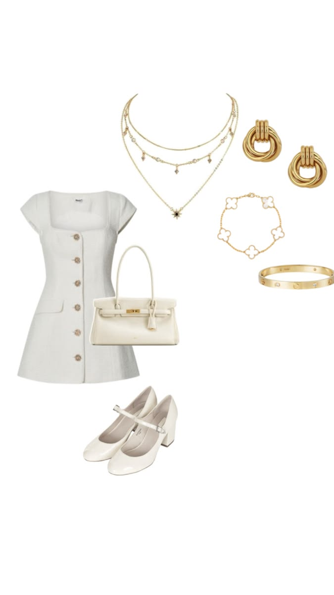
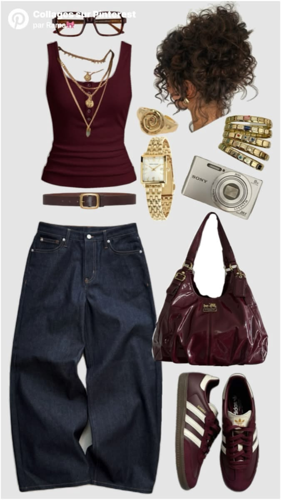
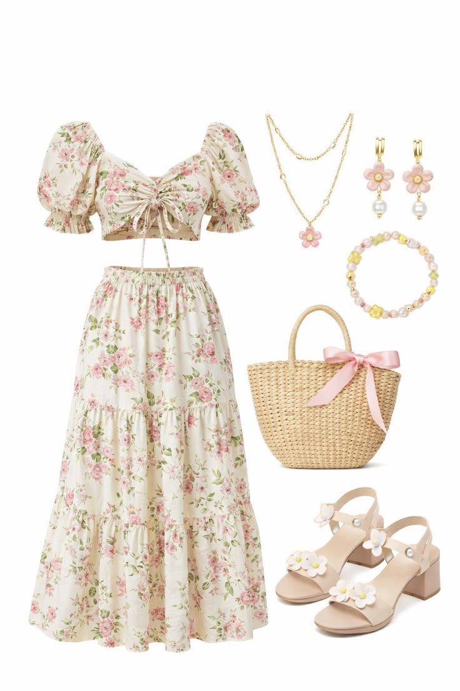

Moda Y2K
Inspirada nos anos 2000, essa estética trouxe de volta calças de cintura baixa, brilho, peças coloridas e acessórios marcantes.
tendências • estilos • expressão
A maneira de se vestir também conta histórias, representa valores e revela a identidade de uma sociedade.
A moda é uma forma de produção cultural porque expressa identidades, valores e tendências de diferentes épocas e sociedades. Por meio das roupas e estilos, as pessoas demonstram sua personalidade e sua conexão com determinados grupos culturais.

Inspirada nos anos 2000, essa estética trouxe de volta calças de cintura baixa, brilho, peças coloridas e acessórios marcantes.

Estética delicada marcada por laços, rendas e elementos românticos, muito popular nas redes sociais.

Estilo inspirado na elegância clássica e discreta, demonstrando como a moda também pode refletir valores e identidades sociais.

Tendência influenciada pela cultura urbana, pela música e pelos esportes, tornando-se um dos estilos mais populares entre os jovens.

Estilo inspirado na vida no campo e na natureza, refletindo valores ligados à simplicidade, ao romantismo e à conexão com o ambiente natural.
As roupas são uma forma de linguagem. Elas revelam gostos, interesses, crenças e até momentos históricos. A moda acompanha as mudanças da sociedade e ajuda a construir identidades individuais e coletivas.
Vestir-se é uma forma silenciosa de dizer quem somos.